Alexandre Enderlin, futur analyste financier
Étudiant en BUT GEA, parcours GC2F, en alternance depuis quatre ans. Mon travail consiste à fiabiliser l'information comptable et à la rendre utile à la décision : un reporting clair, une marge expliquée, une prévision tenue.
Qui suis-je, et où est-ce que je vais ?
Je m'appelle Alexandre Enderlin, j'ai 23 ans. Après trois ans en credit management et comptabilité fournisseur chez Nexans, je pilote aujourd'hui le reporting d'une filiale chez Rexel, et je rejoins à la rentrée le Programme Grande École de Kedge Business School.
Ce que je sais faire : remettre de l'ordre dans une information dispersée, comprendre une organisation avant d'agir, et construire des outils que les équipes utilisent vraiment. Ce site présente mes expériences et les cinq compétences du parcours GC2F.
Parcourez l'itinéraire étape par étape, ou suivez une compétence.
Mes expériences
et mes projets de formation
Trois projets menés en BUT3 et trois expériences professionnelles. Chacun est détaillé : contexte, rôle, résultats et compétences mobilisées.
- Formation · SAELire
Reprise d'entreprise, BJCV Mobilité VerteProjet phare
Évaluation, financement et reprise d'une entreprise de vélos électriques - Formation · SAELire
Transformation numérique, GetFitBox
Conception et lancement d'un site e-commerce de box repas pour sportifs - Formation · BUT3Lire
Dossier documentaire
Diagnostic et amélioration des processus, appliqués à ma mission - 2025 à 2026Lire
Rexel France
Apprenti chef de projet finance - 2022 à 2025Lire
Nexans France
Analyste credit management et comptabilité fournisseur - 2023 à 2025Lire
Conseil des étudiants
Représentant administratif, IUT Rives de Seine
BJCV Mobilité Verte,
la reprise d'une entreprise de A à Z
En équipe de quatre étudiants, nous avons monté le dossier complet de reprise d'un magasin de vélos électriques au Chesnay-Rocquencourt : étude de marché, valorisation, plan de financement et trajectoire de redressement sur quatre ans.
Le point de départ : une entreprise rentable mais mal gérée, immobilisant plus de 800 000 euros de trésorerie dans un stock dormant. Le défi : la racheter à un prix juste, convaincre une banque, et tracer un chemin de retour à l'équilibre.
- Une étude de marché complète : un secteur du cycle de 3,2 milliards d'euros, une zone de chalandise aisée près de Versailles, et un positionnement premium choisi face à des concurrents comme Decathlon ou Cyclable.
- Une valorisation de l'entreprise par la méthode des flux de trésorerie actualisés, aboutissant à 716 000 euros, sur la base d'un coût moyen pondéré du capital de 10 pour cent.
- Une décision d'achat à 680 000 euros plutôt qu'à la valeur théorique, pour ne pas payer au vendeur la plus-value que la relance allait créer, et garder une marge de sécurité.
- Un plan de financement équilibré entre apport, prêt bancaire sur sept ans et crédit-vendeur, calibré pour que l'annuité reste sous le seuil prudentiel de 70 pour cent de l'excédent brut d'exploitation.
- Un compte de résultat et des ratios projetés sur quatre exercices, et une trésorerie prévisionnelle mensuelle bouclant l'année sur un solde positif.
Le cœur du raisonnement tenait dans une idée simple : libérer le cash piégé dans les stocks. En ramenant la rotation de stock de 181 jours à 45 jours, le besoin en fonds de roulement passe de plus de 800 000 euros à environ 60 000 euros, ce qui finance à lui seul la relance et le service de la dette. En parallèle, le taux de marge brute passe de 4,4 à près de 7,9 pour cent, et la capacité d'autofinancement couvre plus de 120 pour cent des échéances de prêt dès la première année.
Ce que ce projet m'a apprisC'est le projet le plus complet du parcours : il fait travailler ensemble le diagnostic d'une organisation, la prévision financière, la négociation d'un prix et la présentation d'un montage à un banquier. Il sert de preuve à quatre des cinq compétences GC2F.
Compétences mobiliséesCompétences mobilisées et validées
Ce projet valide en particulier ma capacité à construire un argument structuré à l'aide de données chiffrées (compétence Produire, niveau 2). Le détail du contexte, des actions et des preuves est présenté sur une page dédiée.
Voir les compétences mobilisées et validées →Rexel France
Au sein d'un distributeur international de matériel électrique, je participe au pilotage financier d'une filiale, avec une mission claire : rendre la performance lisible et actionnable.
- Élaborer les reportings de compte de résultat de la filiale pour donner à la direction une vision financière nette.
- Suivre les indicateurs de marge et de stocks de la filiale Mavisun, et contribuer à l'optimisation des performances.
- Gérer des projets financiers transverses en tenant les délais et les objectifs fixés.
Nexans France
Trois années chez un leader mondial du câble m'ont permis de couvrir toute la chaîne du credit management et de la comptabilité, du suivi des impayés jusqu'à la clôture.
- Gérer un portefeuille de clients en optimisant le suivi des impayés et le reporting des encaissements.
- Prendre en charge les dossiers de clôture comptable, dont la revalorisation et le traitement des créances douteuses.
- Produire le reporting mensuel des indicateurs comptables (comptes débiteurs, avances, factures non parvenues) sous Power BI.
- Contribuer au déploiement de la facturation électronique pour fluidifier les processus comptables.
- Suivre les contrats de location de matériels industriels et veiller à leur conformité.
Conseil des étudiants,
IUT Rives de Seine
Élu pour deux ans pour représenter mes camarades dans les instances administratives de l'IUT, j'ai appris le dialogue institutionnel, la gestion de parties prenantes aux intérêts variés, et la conduite de projets collectifs.
Représentant étudiant élu, j'ai fait l'interface entre les étudiants et l'administration de l'IUT : porter des demandes concrètes, comprendre les contraintes de chaque côté et trouver des arbitrages acceptables.
Missions exercées- Siéger dans les instances administratives de l'IUT (conseil de département, commission pédagogique) et y porter les intérêts des étudiants avec rigueur et discernement.
- Recueillir les retours des étudiants, les synthétiser et les formuler de façon constructive pour qu'ils soient entendus et pris en compte par la direction.
- Organiser et animer les assemblées générales étudiantes : convocation, ordre du jour, compte rendu et communication inter-filières.
- Faciliter la communication entre les différentes filières du département pour créer une dynamique de promotion solidaire.
- Contribuer à l'amélioration des conditions d'études en faisant remonter les besoins concrets des étudiants en matière de ressources pédagogiques et d'organisation.
La médiation entre des intérêts divergents
Défendre les étudiants sans s'opposer systématiquement à l'administration, c'est un exercice d'équilibre que l'on retrouve dans tout poste de pilotage financier : comprendre les contraintes de chaque partie pour trouver des solutions acceptables par tous.
La conduite de réunions et la communication formelle
Préparer un ordre du jour, animer un débat et rédiger un compte rendu utilisable sont des compétences directement transférables au monde professionnel. Ce mandat m'a obligé à structurer ma pensée et à communiquer avec clarté devant des interlocuteurs adultes.
La responsabilité collective et la durée
Un mandat de deux ans, c'est suffisamment long pour voir les effets de ses actions et pour comprendre que le changement institutionnel est lent. Cette patience et cette vision sur le temps long me servent aujourd'hui dans mes projets financiers chez Rexel.
Les cinq compétences
du référentiel GC2F
Pour chacune, le niveau visé dans la formation et les preuves tirées de mes expériences. On accède aux mêmes preuves par étape depuis l'itinéraire.
- 1Niveau 2
Analyser
Analyser les processus de l'organisation dans son environnement - 2Niveau 3
Décider
Aider à la prise de décision - 3Niveau 3
Piloter
Piloter les relations avec les parties prenantes - 4Niveau 2
Produire
Produire l'information comptable, fiscale et sociale - 5Niveau 2
Évaluer
Évaluer l'activité de l'organisation
Analyser
Analyser les processus de l'organisation dans son environnement
Avant d'agir sur une organisation, il faut en comprendre les enjeux et les processus. C'est ce que j'ai appris à faire chez Nexans et sur mes projets de BUT3 : situer une activité dans son environnement, puis mesurer la performance de ses processus.
Dossier documentaire, reporting financier de Mavisun
Mon dossier documentaire de BUT3 : l'optimisation du processus de reporting financier des filiales de Rexel France, à travers le cas de Mavisun. Diagnostic de l'organisation (QQOQCP, Ishikawa, SWOT), analyse des dysfonctionnements et propositions d'amélioration.
Télécharger le dossier (Word)- Dans des organisations de tailles et d'espaces géographiques différents
- Dans des organisations marchandes ou non marchandes
- Analyser les différents types d'enjeux
- Analyser les dimensions identitaires de l'organisation
- Évaluer le niveau de performance des processus
L'étude de marché du projet BJCV
Pour la reprise de BJCV, j'ai contribué à l'analyse d'un secteur du cycle de 3,2 milliards d'euros, de sa zone de chalandise et de sa concurrence, afin de situer l'entreprise et de justifier un positionnement premium.
Le diagnostic du processus de stock
Le cœur du diagnostic BJCV a été d'identifier un processus défaillant : un stock tournant en 181 jours qui immobilisait plus de 800 000 euros, et d'en mesurer l'effet sur la performance.
Le processus de recouvrement chez Nexans
En gérant un portefeuille clients, j'ai cartographié le processus de relance et repéré les points de blocage à l'origine des impayés.
Décider
Aider à la prise de décision
Une décision vaut ce que valent les chiffres qui la fondent. Mon rôle est de produire les analyses et les tableaux de bord qui éclairent un choix, et d'en exposer clairement les risques.
Doctolib, diagnostic financier et stratégie d'investissement
Étude de diagnostic financier de Doctolib face à l'arrivée de l'IA clinique : sa croissance est-elle soutenable ? J'y recommande une stratégie de financement adaptée à chaque axe de développement, soit une aide à la décision en situation de risque.
Télécharger le dossier (PDF)- Dans des organisations de tailles et d'espaces géographiques différents
- Dans des organisations marchandes ou non marchandes
- Exploiter les données pour accompagner la prise de décision
- Exploiter un ERP et ses fonctionnalités
- Analyser les contraintes et les risques, et leur impact sur la performance
La décision de prix sur BJCV
Face à une valorisation théorique de 716 000 euros, nous avons décidé d'une offre ferme à 680 000 euros. C'est une vraie décision sous risque : ne pas payer la plus-value future et se garder une marge de sécurité face aux aléas de la reprise.
Tableaux de bord sous Power BI
Chez Nexans, j'ai construit et maintenu le reporting mensuel des indicateurs comptables, un outil utilisé directement par les responsables pour arbitrer.
Maîtrise des systèmes d'information
J'ai travaillé sur plusieurs outils (SAP, Basware, Get Paid, Glovia), ce qui me permet d'extraire et de fiabiliser les données utiles à la décision.
Le choix des financements de Doctolib
Dans l'étude de cas menée en SAE, j'ai recommandé un financement adapté à chaque axe de croissance : augmentation de capital pour la croissance externe risquée, venture debt et aides publiques pour la R&D, dette bancaire classique pour l'exploitation : le risque au capital, le prévisible à la dette.
Piloter
Piloter les relations avec les parties prenantes de l'organisation
La finance se pratique avec d'autres : clients, fournisseurs, équipes, instances, partenaires bancaires. J'ai appris à coordonner ces relations, en entreprise comme en projet de groupe.
GetFitBox, lancement d'un site e-commerce en équipe
La conception et le lancement, en équipe, d'un site e-commerce de box repas pour sportifs sur Shopify : coordination du projet collaboratif, construction du modèle économique et définition de la politique de communication de la marque.
Télécharger le dossier (Word)- Dans des organisations de tailles et d'espaces géographiques différents
- Dans des organisations marchandes ou non marchandes
- Mobiliser ses qualités individuelles au service de l'intelligence collective
- Animer une équipe et mener un projet collaboratif
- Combiner les méthodes de communication en lien avec la stratégie
Le travail d'équipe sur BJCV
Le projet de reprise a été mené à quatre, sur plusieurs mois. Il a fallu répartir les volets, étude de marché, organisation, finance, et faire converger nos analyses vers un dossier cohérent destiné à convaincre un banquier.
Le mandat de représentant étudiant
Élu, j'ai porté les intérêts des étudiants dans les instances et organisé les assemblées générales, en facilitant la communication entre filières.
La trésorerie de l'association Art'mony
Gérer une association demande de coordonner bénévoles, partenaires et obligations financières.
La relation clients et partenaires chez Nexans
Mon poste en credit management reposait sur la relation avec les parties prenantes : relances d'un portefeuille de clients dédiés, échanges avec le courtier d'assurance-crédit, appui aux agents comptables de l'équipe.
Produire
Produire l'information comptable, fiscale et sociale de l'organisation
C'est le cœur de mon métier : produire une information comptable fiable, conforme, et de plus en plus digitalisée. Trois ans de comptabilité fournisseur m'y ont solidement formé.
BJCV Mobilité Verte, dossier de reprise d'entreprise
Dossier complet de reprise de BJCV Mobilité Verte : étude de marché, valorisation par flux de trésorerie actualisés, plan de financement et liasse prévisionnelle sur quatre ans. Une information financière fiable, du diagnostic jusqu'à la recommandation.
Télécharger le dossier (PDF)- Dans des organisations de tailles et d'espaces géographiques différents
- Dans des organisations marchandes ou non marchandes
- Traiter et contrôler les opérations de comptabilité générale et approfondie
- Prendre en charge la révision comptable en contrôlant les cycles
- Établir les comptes à l'aide d'outils de digitalisation
- Sécuriser l'information comptable produite
Les clôtures comptables chez Nexans
J'ai pris en charge des dossiers de clôture incluant la revalorisation et le traitement des créances douteuses, des opérations de comptabilité approfondie menées dans le respect des normes. Ces tâches figurent dans ma fiche de poste.
Le déploiement de la facturation électronique
J'ai contribué à la mise en place du e-invoicing, une illustration directe de l'adaptation à la digitalisation des activités comptables.
Le reporting comptable mensuel
La production régulière des indicateurs comptables sous Power BI témoigne d'une information fiable, structurée et reproductible.
Évaluer
Évaluer l'activité de l'organisation
Mesurer la rentabilité, construire des prévisions, suivre la performance dans le temps : c'est la dimension de la finance vers laquelle je veux orienter ma carrière, et celle que je pratique aujourd'hui chez Rexel.
Un temps pour nous, création et évaluation d'un projet d'entreprise
Le projet de création d'entreprise « Un temps pour nous » : analyse de l'environnement, étude du marché et construction des prévisions financières. L'occasion de bâtir puis d'évaluer la viabilité d'un projet à l'aide d'outils d'analyse et de prévision.
Télécharger le dossier (PDF)- Dans des organisations de tailles et d'espaces géographiques différents
- Dans des organisations marchandes ou non marchandes
- Identifier les points forts et faibles en activité et en structure financière
- Mettre en place une comptabilité analytique et une gestion budgétaire
- Évaluer les résultats et la performance par le contrôle budgétaire
La valorisation par DCF du projet BJCV
J'ai participé à la valorisation de l'entreprise par la méthode des flux de trésorerie actualisés : estimation des flux futurs, valeur terminale, actualisation au coût moyen pondéré du capital de 10 pour cent, pour aboutir à 716 000 euros.
Les prévisions sur quatre exercices
Le dossier projette compte de résultat, ratios de solvabilité et de rentabilité, et trésorerie prévisionnelle sur quatre ans, pour vérifier la soutenabilité de l'endettement et la trajectoire de redressement.
Le suivi de la marge et des stocks chez Rexel
Le pilotage des indicateurs de la filiale Mavisun est une évaluation continue de l'activité, tournée vers l'optimisation des performances.
La mesure de la performance de Doctolib
Pour juger la soutenabilité du modèle, j'ai construit une grille d'indicateurs adaptée à une entreprise par abonnement : revenu récurrent, panier moyen par praticien, coût d'acquisition rapporté à la valeur client, taux d'attrition. L'analyse du BFR négatif montrait comment les abonnements payés d'avance financent spontanément la trésorerie.
Ce qui compte aussi,
en dehors du travail
La course à pied, les voyages et l'engagement associatif. Trois activités qui disent autant de ma façon de travailler que mon CV.
42,195 km, et tout ce qu'il
a fallu pour les tenir
Courir, c'est ma façon d'entretenir la constance et la patience qui me servent aussi au travail.
Je me fixe des objectifs exigeants et je m'y tiens. Le marathon en fait partie : un cap lointain qui ne se franchit qu'à force de régularité.
Je cours depuis l'enfance. J'ai fait de l'athlétisme au collège, et courir un marathon était un objectif que je gardais en tête depuis longtemps.
L'origine de la course, je l'ai découverte en cours de latin et d'histoire : en 490 avant J.-C., après la bataille de Marathon, un messager aurait couru jusqu'à Athènes annoncer la victoire. Les 42,195 km de l'épreuve moderne en gardent la trace.
Le jour J, l'enjeu n'est pas la vitesse mais la gestion de l'effort sur la durée : doser, garder un rythme régulier, rester lucide face à la fatigue. Les mêmes qualités que celles que je mobilise au travail.
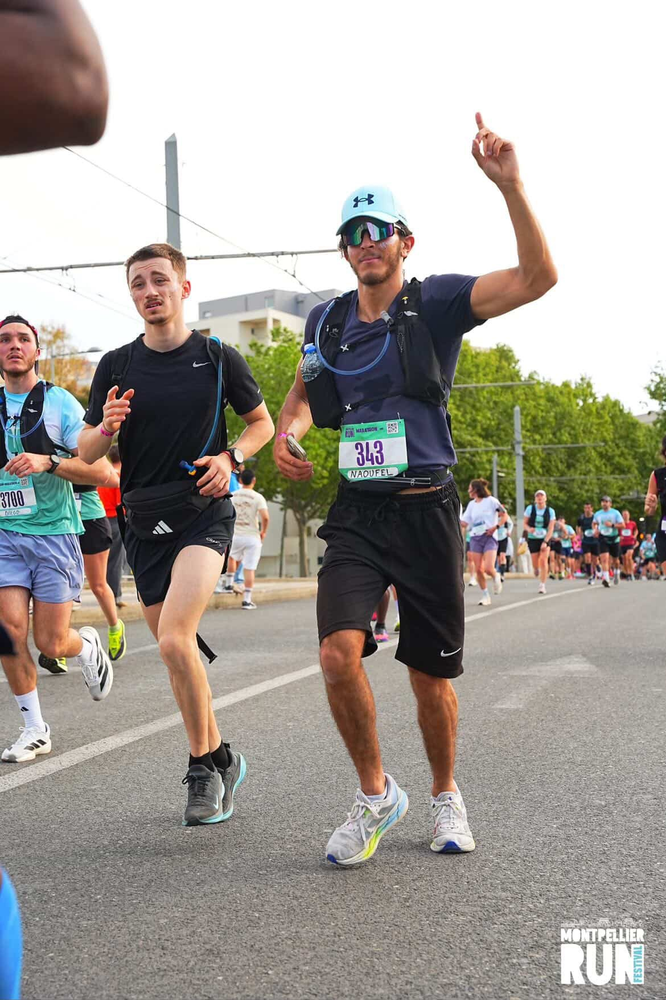
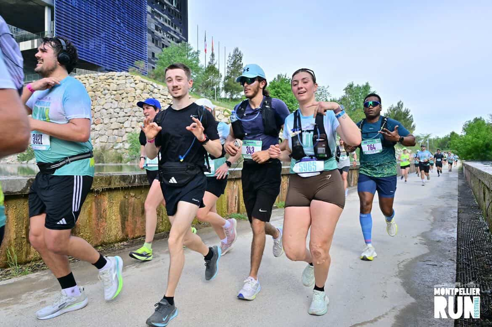
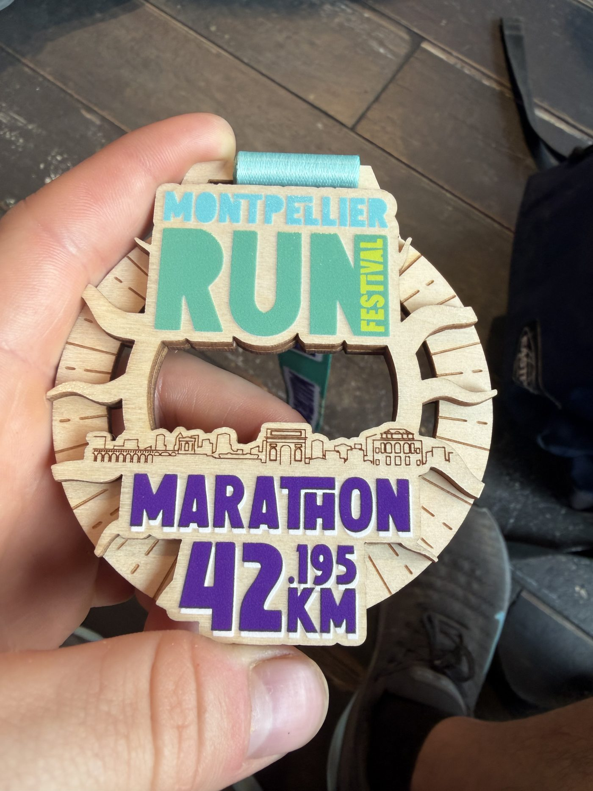
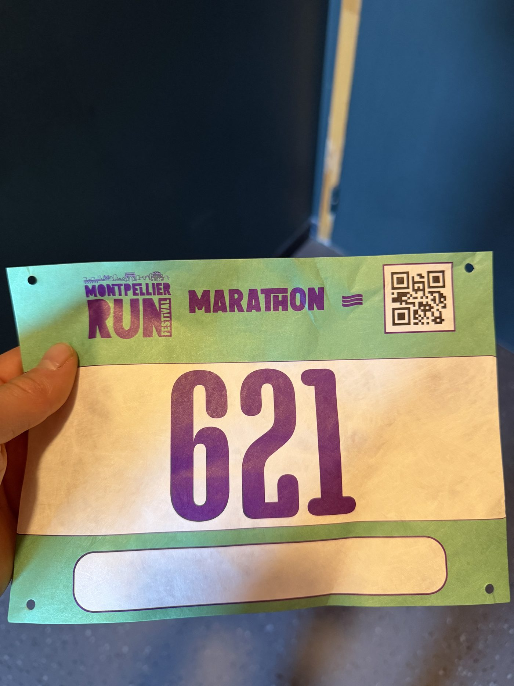
Montpellier Run Festival · dossard 621 · médaille finisher
Boucler un marathon est un projet en soi, bien avant la ligne de départ : un plan d'entraînement étalé sur plusieurs mois, une préparation quotidienne et la capacité à tenir un objectif lointain sans se décourager.
C'est cette régularité, sur la durée, qui m'a permis de finir les 42,195 km de Montpellier dans le temps que je visais.
Carnet de voyage
Voyager m'apprend à m'adapter vite, à comprendre d'autres façons de faire et à garder l'esprit ouvert. Quelques étapes en images.
New York, Florence, Vilnius, la Croatie, Barcelone : autant de villes et de pays découverts ces dernières années, pour leur histoire, leur architecture et leur vie quotidienne.
Chaque destination m'a appris quelque chose, ne serait-ce qu'à me repérer et à m'organiser dans un environnement inconnu.
GalerieMettre mes compétences
au service d'un collectif
M'engager, c'est apprendre à porter des responsabilités réelles dans un cadre différent de l'entreprise, avec des interlocuteurs variés et des enjeux humains au premier plan.
Art'mony
Art'mony est une association à vocation culturelle et artistique. En tant que trésorier, je suis responsable de la santé financière de la structure : tenue des comptes, élaboration et suivi du budget annuel, gestion des relations avec les partenaires financiers et transparence envers les membres.
Ce rôle me permet d'appliquer concrètement mes compétences en gestion financière dans un cadre associatif, où la ressource est rare et où chaque euro dépensé doit servir le projet collectif. C'est une gestion de proximité, directe, sans filet.
Coordonner bénévoles, prestataires et partenaires pour organiser des événements m'a appris à allier exigence financière et sens du collectif.
Compétences développées
Solidarité Sida
Solidarité Sida est une association de lutte contre le sida et de soutien aux personnes touchées par la maladie. Mon engagement bénévole m'a appris le sens de l'utilité commune et la valeur d'une action collective au service d'une cause qui dépasse les intérêts individuels.
Participer à des événements de sensibilisation et mobiliser autour d'une cause m'a fait travailler l'écoute, l'organisation et le sens du collectif, dans un cadre où l'enjeu est d'abord humain.
Ce que cet engagement m'apporte
Alexandre
Enderlin
J'ai 23 ans et je termine mon BUT Gestion des Entreprises et des Administrations, parcours Gestion Comptable, Fiscale et Financière (GC2F), à l'IUT de Paris Rives de Seine. À la rentrée 2026, je rejoins le Programme Grande École (PGE) de Kedge Business School pour poursuivre en finance, audit et contrôle de gestion.
J'ai choisi l'alternance dès la première année : c'est en entreprise que les notions comptables et financières prennent tout leur sens. Trois années de BUT m'ont donné des bases solides en comptabilité approfondie, fiscalité, gestion financière, contrôle de gestion, droit et systèmes d'information, que j'ai confrontées au terrain dès le départ.
Trois ans chez Nexans, leader mondial du câble, ont constitué le cœur de ma formation. Au service Credit Management et Comptabilité Fournisseur, j'ai géré un portefeuille de clients dédiés : suivi des encaissements, relances, traitement des impayés et échanges avec le courtier d'assurance-crédit. J'ai pris part aux clôtures comptables (revalorisation, créances douteuses) et produit chaque mois, sous Power BI, le reporting des indicateurs comptables. J'ai aussi contribué au déploiement de la facturation électronique.
Depuis 2025, chez Rexel, distributeur international de matériel électrique, je suis apprenti chef de projet finance sur la filiale Mavisun. J'élabore les reportings de compte de résultat, je pilote les indicateurs de marge et de stocks, et je mène des projets financiers transverses. Je suis passé de la production comptable au pilotage : rendre la performance lisible pour aider la direction à décider.
Au quotidien, je cherche à remettre de l'ordre dans une information dispersée, à comprendre une organisation avant d'agir, et je suis de près l'actualité économique et financière.
Mon objectif professionnel
Intégrer un poste d'analyste financier ou de contrôleur de gestion au sein d'un groupe international, où je pourrai mettre à profit mes compétences en reporting, analyse de la performance et pilotage financier. Le Programme Grande École de Kedge me permettra de franchir ce cap avec une solide formation grande école.
-
2026 à 2028
Programme Grande École (PGE)
Kedge Business SchoolGrade de Master en management, spécialisation finance d'entreprise, audit et contrôle de gestion, en alternance.
À venir -
2022 à 2026
BUT GEA · Parcours GC2F
IUT Rives de Seine (Paris Descartes)Comptabilité approfondie, fiscalité et gestion financière. Contrôle de gestion, droit, systèmes d'information, anglais des affaires.
En cours -
2021
Baccalauréat général
Mention assez bienSpécialité Sciences Économiques et Sociales. Option Mathématiques.
-
2025 à 2026
Chef de projet Finance
Rexel France · Filiale MavisunÉlaboration des reportings P&L, pilotage des indicateurs de marge et de stocks, gestion de projets financiers transverses.
Alternance -
2022 à 2025
Analyste Credit Management & Comptabilité Fournisseur
Nexans FranceGestion de portefeuille clients, clôtures comptables, reporting mensuel Power BI, déploiement de la facturation électronique. 3 ans.
Alternance -
2023 à 2025
Représentant Administratif
Conseil des étudiants · IUT Rives de SeineReprésentation des intérêts des étudiants dans les instances administratives, organisation des assemblées générales inter-filières.
Ce que je sais faire.
Finance & Comptabilité
Analyse des risques, recouvrement de créances, gestion de portefeuille clients, clôture comptable, reporting financier, notions d'audit et contrôle de gestion.
Outils numériques
Excel (TCD, formules avancées, VBA), Power BI, SAP, Basware, Get Paid, Glovia.
Soft skills
Rigueur, organisation, esprit d'analyse, qualité rédactionnelle, capacité d'adaptation, communication interpersonnelle.
Langues
Anglais B2, intermédiaire opérationnel.
Espagnol B1, niveau scolaire.
Centres d'intérêt
Actualité économique et marchés financiers. Voyages culturels. Course à pied et marathon (Montpellier 4h13).
Engagements
Bénévole pour Solidarité Sida.
Trésorier de l'association Art'mony.
Le morceau qui accompagne ce portfolio
J'ai choisi comme bande-son « Memories », de David Guetta et Kid Cudi. En anglais, memories signifie « les souvenirs ».
C'est ce que rassemble ce site : chaque page renvoie à une expérience vécue, une mission, un projet, une course ou un voyage. Vous pouvez lancer la musique à tout moment depuis le lecteur, en bas à droite de l'écran.
Travaillons ensemble.
N'hésitez pas à me contacter pour toute opportunité d'alternance, de stage ou d'échange professionnel.
GetFitBox, concevoir et lancer
un site e-commerce de A à Z
En équipe, nous avons imaginé puis construit un service de box repas pensées pour les sportifs, et son site marchand complet sur Shopify : offre, parcours d'achat, modèle économique et cadre réglementaire.
GetFitBox part d'un constat : les box repas grand public (HelloFresh, Quitoque…) ne répondent pas aux besoins nutritionnels des sportifs. Notre service propose des portions calibrées, riches en protéines et à base de glucides complexes, pensées pour l'entraînement et livrées en Île-de-France.
Ce que nous avons construit- Un site e-commerce complet sur Shopify : page d'accueil, catalogue, tunnel de commande et paiement sécurisé, espace client, en nous appuyant sur la sécurité (SSL, PCI DSS) et l'écosystème d'applications de la plateforme.
- Un formulaire intelligent de qualification : il vérifie l'éligibilité géographique de la livraison et recommande automatiquement la box la plus adaptée selon les objectifs (prise de masse, maintien, perte de poids), les préférences (halal, végétarien) et l'intensité d'entraînement.
- Une gamme structurée : trois familles (Classique, Halal, Veggie), chacune en quatre tailles (S, M, L, XL), soit douze box au catalogue, de 3,90 € à 7,00 € le repas.
- Une politique tarifaire positionnée entre les box généralistes et les services sportifs haut de gamme, appuyée sur une analyse du marché et un sondage auprès de 82 personnes de notre cible.
- Un cadre réglementaire maîtrisé : normes de sécurité alimentaire (IFS, HACCP, ISO 22000), choix de fournisseurs certifiés, droits d'auteur et conformité RGPD sur les données clients.
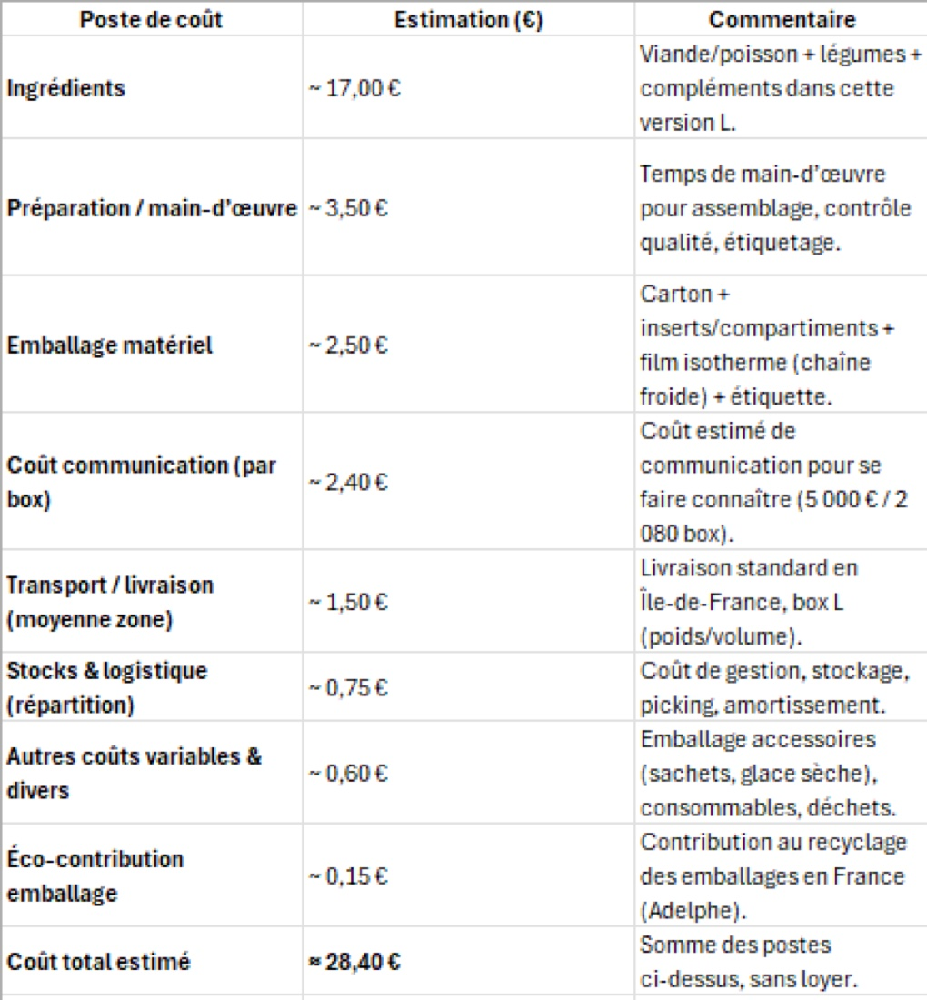
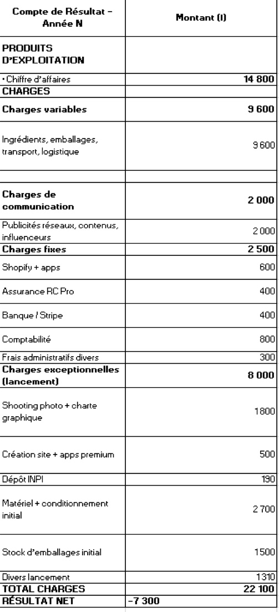
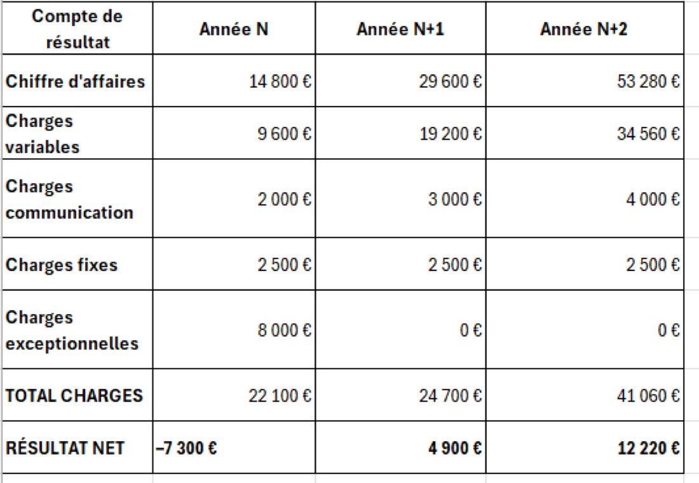
Compétences mobilisées et validées
Ce projet collaboratif valide mes compétences de pilotage de projet et de communication, ainsi que la gestion du temps et le travail en équipe. Le détail est présenté sur une page dédiée.
Voir les compétences mobilisées et validées →Diagnostiquer un processus
pour proposer des améliorations
Dans le cadre de mon dossier documentaire de BUT3, j'ai analysé ma mission en entreprise sous l'angle des enjeux de l'organisation, puis formalisé des pistes d'amélioration des processus à l'aide d'outils de diagnostic.
Mon dossier documentaire de BUT3 porte sur ma mission en alternance : l'optimisation du processus de reporting financier des filiales du groupe Rexel France, à travers le cas de Mavisun. Une démarche complète, du diagnostic à la proposition d'améliorations.
ContexteLes filiales transmettaient leurs données financières avec des délais et des formats hétérogènes, sans clôture mensuelle et avec peu de moyens humains pour le suivi. Résultat : des incohérences entre marge, stock et chiffre d'affaires, et de longues heures de retraitement au siège. Ma mission : fiabiliser et accélérer ce reporting, et le restituer sous forme de KPI lisibles.
J'ai resitué la mission dans les enjeux du groupe : fiabilité de l'information financière, rapidité de consolidation entre filiale et siège, et qualité de la décision. Comprendre ces enjeux a permis de cibler les points du processus où se concentraient les pertes de temps et les erreurs.
J'ai d'abord cadré la situation avec la méthode QQOQCP, pour décrire précisément le dysfonctionnement avant de chercher ses causes.
| Quoi ? | Dysfonctionnements dans la transmission et la fiabilisation des données financières de Mavisun : incohérences marge / stock / CA, absence de standardisation, retards d'envoi. |
|---|---|
| Qui ? | La filiale Mavisun (production des données), le siège Rexel France (consolidation), l'apprenti chargé du reporting, la tutrice, la RAF et les équipes administratives. |
| Où ? | Données produites dans Odoo au sein de Mavisun, retraitées et consolidées au siège de Rexel France. |
| Quand ? | Problèmes observés avant 2025 ; mission menée sur l'année 2025-2026 ; objectif d'une transmission mensuelle sous 3 jours (J+3). |
| Comment ? | Analyse des exports Odoo, normalisation des fichiers, création d'un modèle standardisé, contrôles de cohérence et calendrier de transmission. |
| Combien ? | Retards récurrents (jusqu'à +6 jours), incohérences exigeant plusieurs heures de retraitement ; pas de coût logiciel mais un fort investissement en coordination. |
| Pourquoi ? | Manque de standardisation, absence de clôture mensuelle, pratiques hétérogènes, ressources limitées et communication insuffisante entre siège et filiale. |
À partir du diagnostic, j'ai proposé un modèle de reporting standardisé (marge, stocks, KPI consolidés), des contrôles de cohérence et un calendrier de transmission. Le diagramme d'Ishikawa a permis de remonter aux causes racines du problème, en les classant par familles (méthodes, outils, données, ressources humaines, organisation).
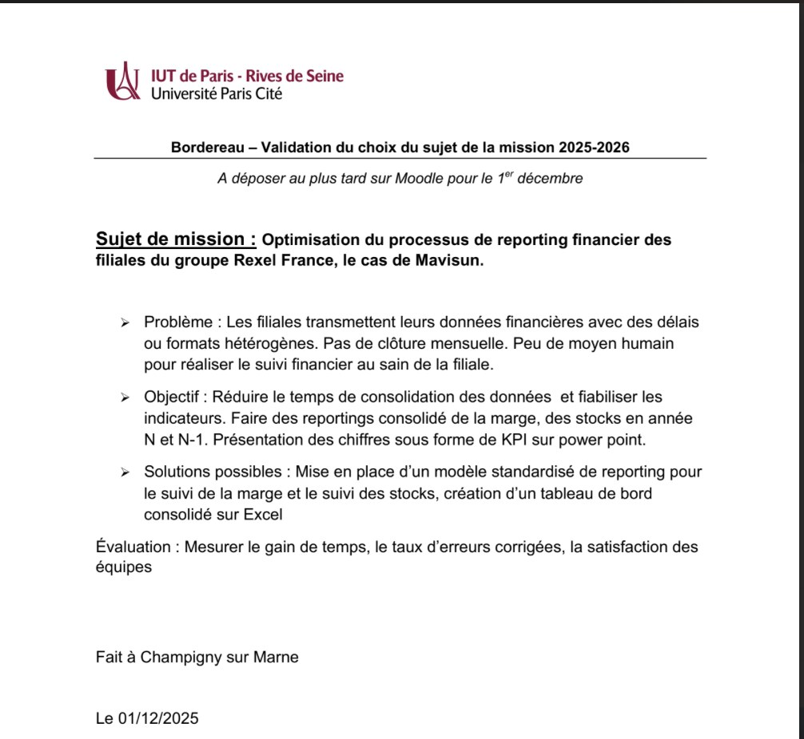
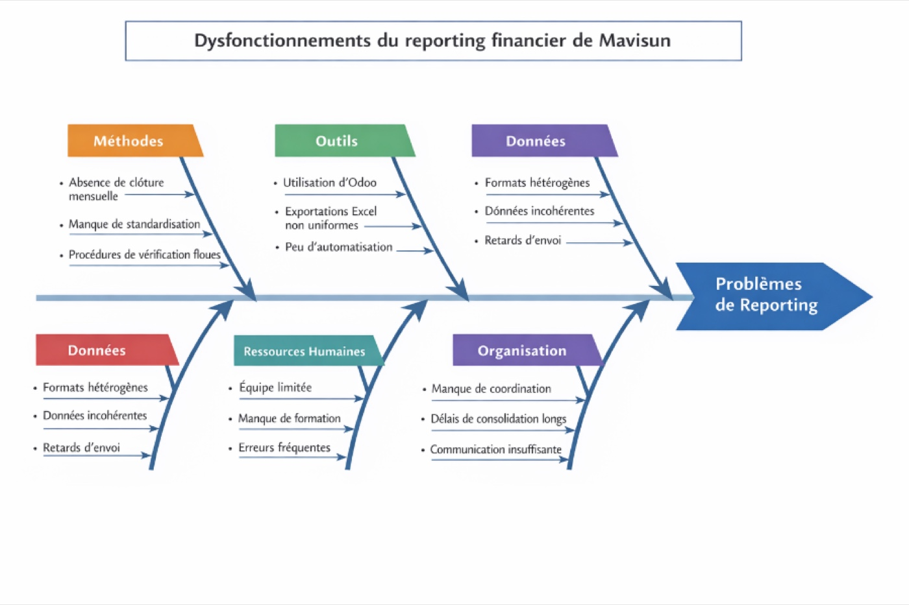
Piloter un projet collaboratif
et sa communication
Le projet GetFitBox, mené en équipe sur plusieurs mois, a été l'occasion de valider des compétences de pilotage et des savoir-être essentiels au travail collectif.
Construire un site e-commerce complet en équipe, dans un délai contraint, supposait de coordonner des contributions multiples (offre, contenu, modèle financier, design, conformité) et de les faire converger vers un rendu cohérent. C'est un projet de groupe avant d'être un livrable technique.
Nous avons réparti les volets entre membres de l'équipe, fixé des jalons et tenu un rythme régulier. J'ai notamment piloté la construction du modèle économique (coûts de revient, compte de résultat, prévisionnel à trois ans) et veillé à sa cohérence avec l'offre commerciale portée par le reste du groupe. Tenir les délais tout en assurant la qualité a demandé une vraie gestion du temps.
J'ai contribué à l'identité et au discours de la marque : positionnement clair face aux concurrents, argumentaire de valeur (nutrition sportive, transparence sur la livraison), et cohérence du message sur l'ensemble du parcours client. Le formulaire de qualification a été pensé comme un outil de communication autant que de vente : informer honnêtement sur l'éligibilité et guider le visiteur sans le perdre.
Construire un argument structuré
à l'aide de données chiffrées
Le dossier de reprise de BJCV Mobilité Verte est la démonstration la plus complète de ma capacité à produire une information comptable et financière fiable, et à m'en servir pour bâtir une recommandation.
Reprendre une entreprise suppose de transformer des données comptables brutes en un raisonnement solide : valoriser, projeter, et défendre un prix face à un banquier. Tout l'enjeu était de produire une information chiffrée juste, puis de l'organiser en un argument convaincant.
J'ai traité les retraitements nécessaires à l'évaluation : normalisation du résultat, lecture du besoin en fonds de roulement, et identification du stock dormant immobilisant plus de 800 000 € de trésorerie. Ces problèmes comptables résolus ont conditionné toute la suite du diagnostic.
À partir de cette information fiabilisée, j'ai construit un diagnostic complet : valorisation par les flux de trésorerie actualisés (716 000 €), plan de financement, et trajectoire de redressement sur quatre ans. La recommandation (acheter à 680 000 € et ramener la rotation de stock de 181 à 45 jours) découle directement des chiffres : c'est là tout l'argument structuré.
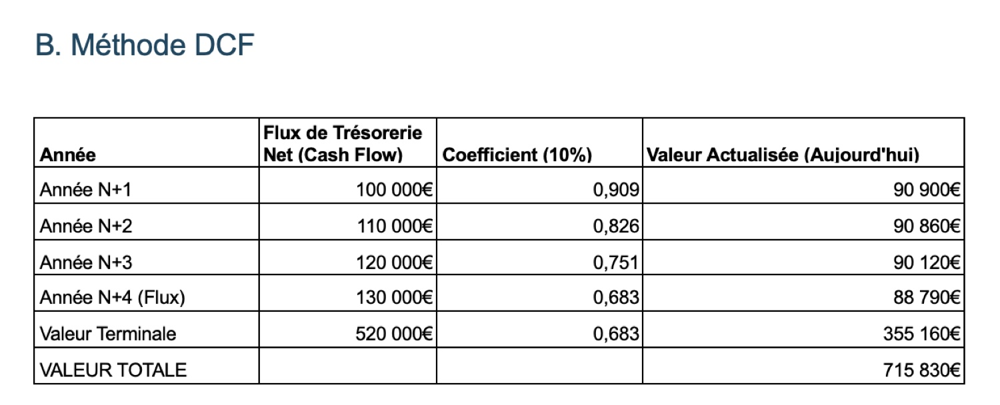
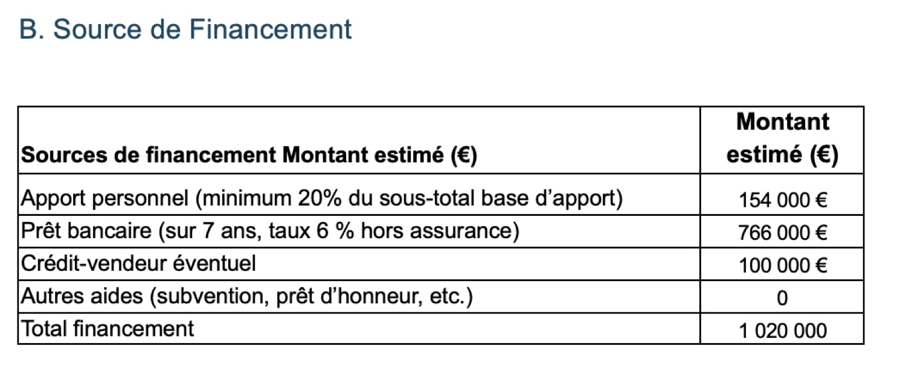
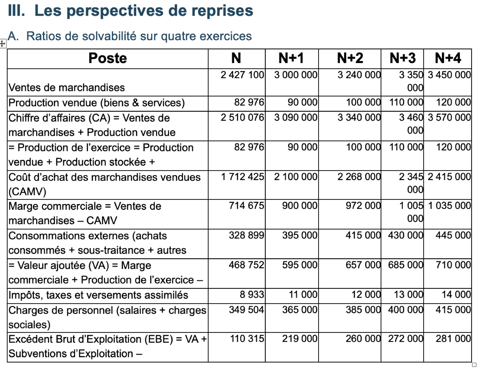